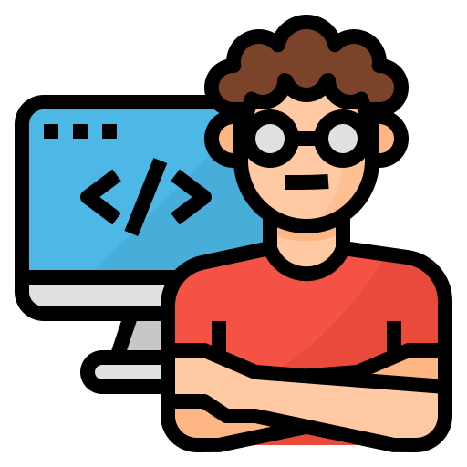
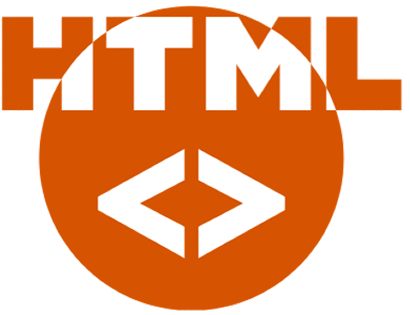
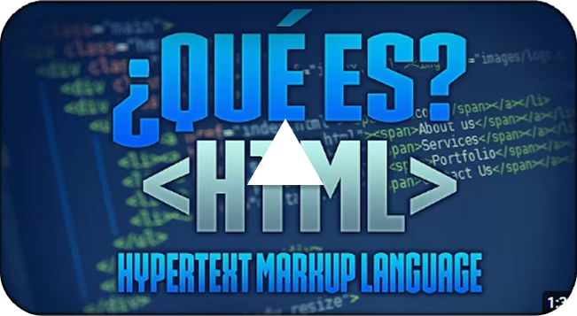
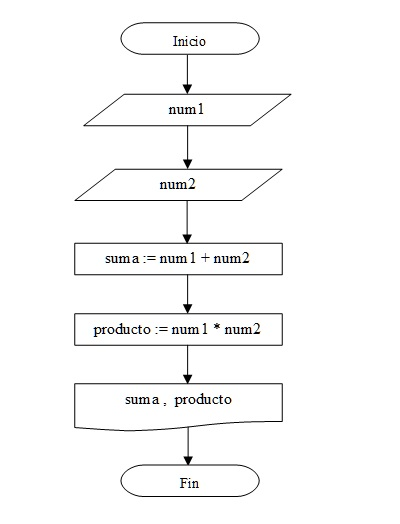
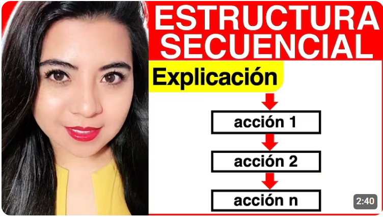
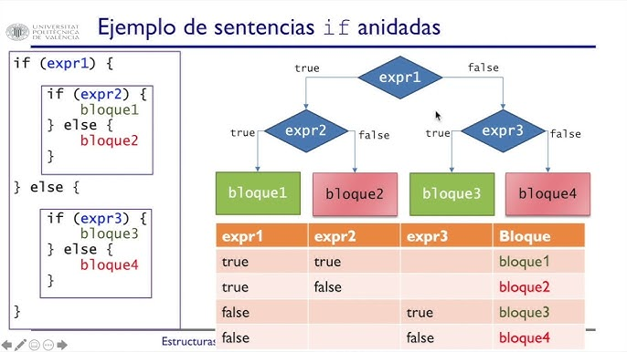
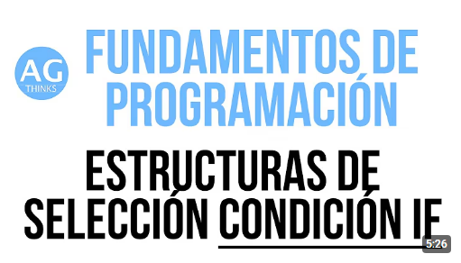
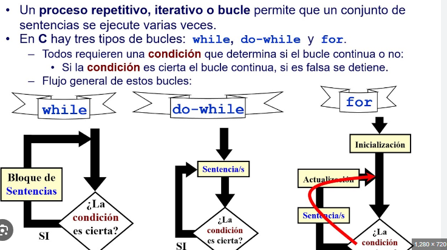
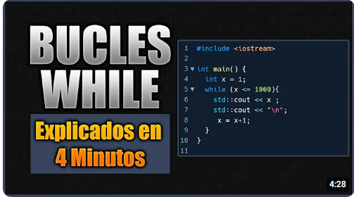

Bienvenido a esta página para conocer lo basico y escencial para iniciar en el mundo del desarrollo web

Para comenzar se recomineda seguir esta serie de temas y prácticarlos:

HTML (HyperText Markup Language) es el lenguaje de marcado estándar utilizado para crear y estructurar el contenido de las páginas web. Permite organizar elementos como títulos, párrafos, imágenes, enlaces, tablas y formularios para que los navegadores puedan mostrarlos correctamente.
Ingrese AQUI para mayor información

Las estructuras de control determinan el orden en que se ejecutan las instrucciones de un algoritmo. Según el teorema de la programación estructurada, cualquier programa puede escribirse combinando tres tipos básicos:
Es la estructura básica de programación donde las instrucciones se ejecutan en un orden específico, una tras otra, desde el inicio hasta el final. Ver Más


es una estructura que permite tomar decisiones y ejecutar diferentes acciones según se cumpla una condición. (ej. if, else, switch). Ver Más


son estructuras que repiten un bloque de código varias veces según una condición o una cantidad de repeticiones. (ej. for, while, do-while) Ver Más

